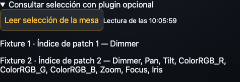

LXSelection para grandMA3
Guía actualizada el 10 de noviembre de 2026. Plugin opcional para consultar desde Pro L la selección de la mesa y los atributos reconocidos. Su primera versión está pendiente de validación completa en consola física.
Instalar el plugin opcional LXSelection
Necesitas una versión de Pro L que muestre Consultar selección con plugin opcional dentro de Fixtures. La instalación se realiza en la mesa o en grandMA3 onPC.
Descargar LXSelection (.zip) · Abrir la guía de instalación.
- Descomprime el ZIP y conserva juntos
LXSelection.xmlyLXSelection.lua. - Cópialos en
gma3_library/datapools/pluginsde la instalación, o engrandMA3/gma3_library/datapools/pluginsde una memoria USB. - En el pool Plugins del DataPool activo, abre el menú de importación de una casilla libre, selecciona la unidad y el archivo
LXSelection.xmle impórtalo. - Conserva el nombre exacto LXSelection. Revisa que su componente Lua se haya cargado y guarda el show.
También puedes crear un plugin llamado LXSelection y pegar el contenido de LXSelection.lua en su primer componente Lua. El funcionamiento del pool y del editor se describe en la documentación oficial. Manual oficial de plugins de grandMA3.
Configurar el retorno del plugin
- En grandMA3, dentro de In & Out → OSC, activa Enable Output.
- Crea o configura una línea UDP de salida dirigida a la IP del móvil. Activa Send y deja vacío el prefijo de esa línea.
- Configura su puerto con el puerto de escucha del perfil de Pro L. Un perfil nuevo utiliza 8001. Para seguir el ejemplo siguiente, crea un perfil nuevo; los perfiles reutilizados conservan su puerto de escucha anterior.
- Abre el componente Lua de LXSelection y comprueba
local outputLine = 1. Ese número debe ser el de la línea OSC que apunta al móvil. Si utilizas otra línea, cambia el número y guarda el componente y el show.
| Sentido del ejemplo | Destino | Puerto UDP |
|---|---|---|
| Pro L → grandMA3 | IP de la mesa u onPC | 8000 |
| grandMA3 → Pro L | IP del móvil | 8001 en un perfil nuevo |
El puerto de entrada de grandMA3 y el puerto de retorno son ajustes independientes. outputLine identifica una línea de la tabla OSC. Conserva en la línea de retorno el prefijo vacío que requiere la respuesta de LXSelection.
Leer e interpretar la selección
- Selecciona los aparatos en grandMA3, o prepara su selección desde el teclado de Pro L.
- En Pro L abre Fixtures → Selección de la mesa / teclado.
- Despliega Consultar selección con plugin opcional y pulsa Leer selección de la mesa.
- Espera la respuesta y consulta cada fila. Repite la lectura después de cambiar la selección en la mesa.
La respuesta muestra el Fixture ID cuando existe, el índice de patch interno y los atributos reconocidos entre Dimmer, Pan, Tilt, ColorRGB_R, ColorRGB_G, ColorRGB_B, Zoom, Focus e Iris. El índice ayuda a distinguir subfixtures que comparten FID. La consulta contempla hasta 32 elementos; si la selección es mayor aparece Primeros 32 elementos de la selección. Una selección sin elementos devuelve Selección vacía. Una fila sin coincidencias puede corresponder a un aparato con otros atributos.
La lectura es una instantánea solicitada con el botón. El plugin consulta la selección y los atributos disponibles mediante la API de grandMA3. El control de niveles sigue realizándose al operar los controles de la app.

Si la consulta no responde
Comprueba el DataPool activo, el nombre exacto LXSelection, la carga de su componente Lua, la interfaz de red de grandMA3 y la línea OSC dirigida al móvil. Revisa Enable Input y Receive Command en la entrada, Enable Output y Send en la salida, el puerto de retorno y outputLine. La línea de retorno debe tener el prefijo vacío.
Un perfil nuevo de Pro L utiliza 8001 para la escucha. Un perfil reutilizado puede conservar otro puerto. Para seguir el ejemplo de esta guía, crea un perfil nuevo de grandMA3.